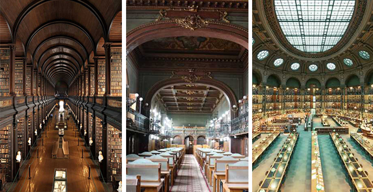

The "Gheorghe Asachi" Library in Iasi is one of the most beautiful libraries in our country and in the world, ranked first in a top of the 25 most beautiful libraries in the world, made by users of the Bored Panda site, one of the most appreciated online communities in the world for art, photography and design lovers.
The library is built in the eclectic style, a style that dominates the architecture of 19th century Europe.
